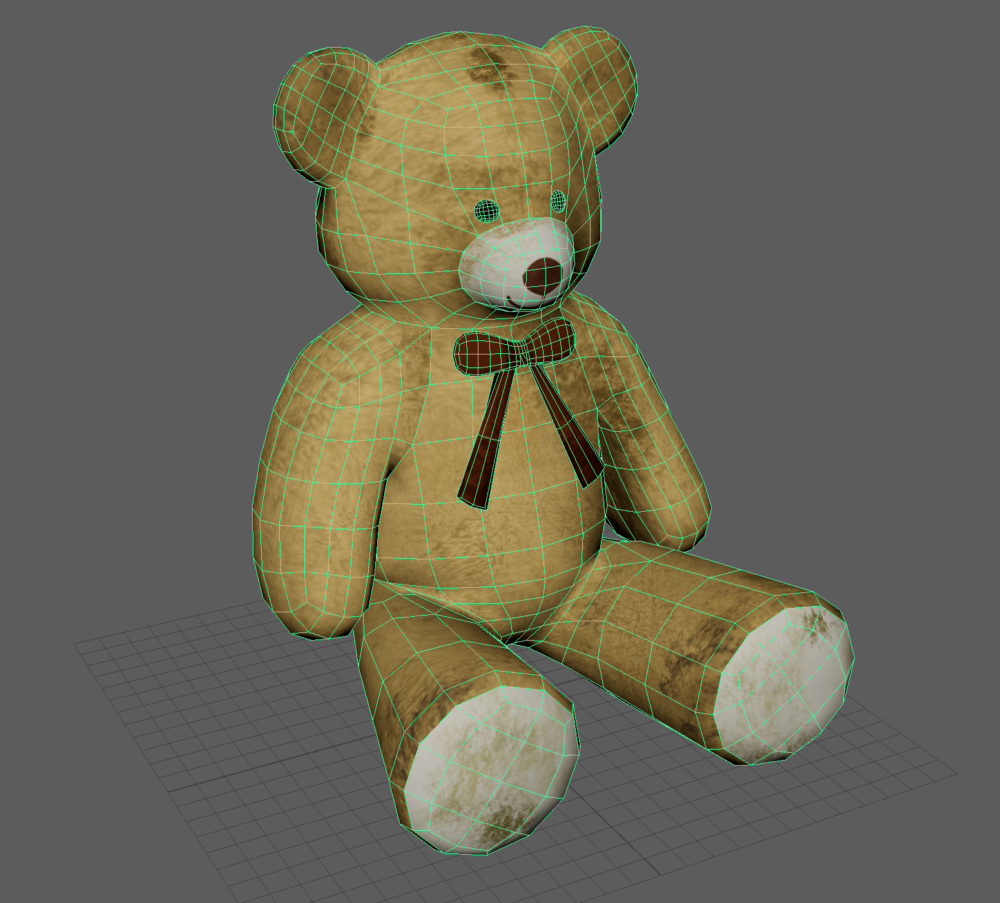

T U N N E L - V I S I O N
Tunnel Vision is an emotionally-driven 3D animated short about a young boy searching for his family in an abandoned world, guided only by a photograph. A robot companion keeps him company during his journey, and through their shared experiences, they form a close bond. The story explores themes of connection, loss, and rediscovery as the boy must choose between holding onto the memory of his past (symbolized by the photograph) and embracing the bond he forms in the present.
The animation's title references the medical condition of tunnel vision—"the loss of peripheral vision with retention of central vision, resulting in a constricted circular tunnel-like field of vision"—which metaphorically represents how the boy's singular focus on finding his family causes him to neglect things happening around him, until they come right at him. The narrative resolves with the discovery of an underground city, a direct result of the boy's decision to prioritize his relationship with the robot over the photograph.
The project aimed to create a heartfelt animation with expressive characters and detailed environmental storytelling. The team prioritized emotional weight and visual detail, resulting in polished character designs, environmental concepts, and a narrative that balances symbolic meaning with grounded storytelling.
I served as Website Manager, 3D Modeler, and Animator for this project. My responsibilities spanned multiple production phases, from pre-production documentation to final animation delivery.
Website Management: I designed and managed the project website, ensuring all team progress, concept art, storyboards, and final deliverables were accurately documented and accessible. The website served as our central hub for showcasing the project's development process and final animation.
3D Modeling: I created several key 3D assets for the animation:
• Robot Model: Complete character model including modeling, UV mapping, texturing, and rigging. The robot needed to be expressive and easy to animate, with the ability to switch between 2D facial expressions during animation.


• Teddy Bear Model: Prop model with modeling and UV mapping, completed under the guidance of Mu Ran Wang (Nancy), who also provided the UV texture map.

Figure 02. Teddy Bear Model - Prop model with modeling and UV mappingAnimation: I animated three key scenes that establish the story's emotional arc:
• Scene 1: Overview of the abandoned city, where the Boy first meets the Robot—establishing their initial encounter and the world's desolate atmosphere.
• Scene 3: Robot and Boy approach the cliff—building tension and setting up the conflict between the photograph and the robot companion.
• Scene 4: Robot returns to the Boy, the photograph flies away, and the Boy runs after it with the Robot following—the emotional climax where the Boy must choose between his past and present connection.
These scenes required careful attention to character expression, body language, and pacing to convey the emotional weight of the story. Working with custom rigs and blend shapes, I ensured smooth character movements and expressive gestures that supported the narrative's emotional beats.
This project demonstrated the importance of time management and realistic scope assessment in 3D animation production. We initially planned for 9 scenes totaling approximately 5 minutes, but had to cut Scene 2 to manage workload—especially after a team member had to withdraw from the course. This experience taught me to identify non-essential elements early and prioritize core narrative beats.
The rendering phase revealed critical planning gaps. We underestimated the time required to render over 6,000 frames in 1080p resolution, compounded by frequent Maya crashes. Starting renders only 36 hours before the presentation forced us to reduce output to 720p—a compromise that, while maintaining quality, highlighted the need for earlier render testing and buffer time in production schedules.
Working across multiple roles—website management, modeling, and animation—strengthened my ability to balance technical execution with creative vision. The project's emphasis on emotional storytelling required every technical decision to serve the narrative, from character rigging that enabled expressive movement to environmental modeling that reinforced the desolate atmosphere. This experience reinforced that successful animation production requires both technical proficiency and narrative sensitivity.